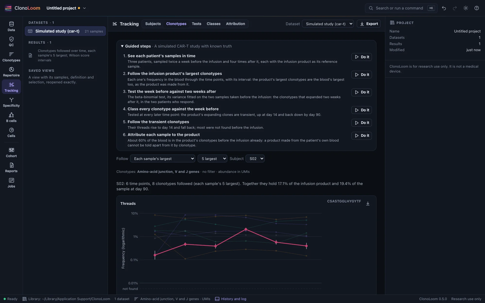
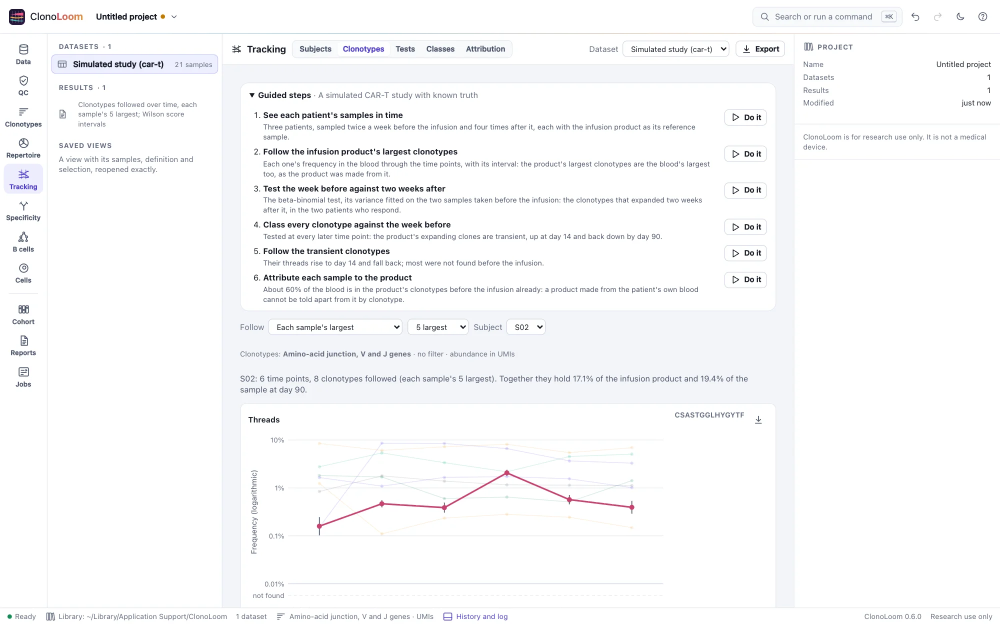

Following clonotypes
The Tracking view's Clonotypes part follows clonotypes through each subject's samples in time order: their frequency at every time point, with its interval, drawn as threads and an alluvial plot, and listed in a table linked to both.
Choose what to follow


Give the samples their subjects and time points first (Subjects and time points). Then open Tracking › Clonotypes and choose what to follow:
- The reference sample's largest (the default): the 10 largest clonotypes of each subject's reference sample, such as an infusion product or a donor's blood. A subject without a reference sample has each sample's largest instead, and the view says so.
- Each sample's largest: the 5 largest of every sample of the subject, together.
- A list: clonotypes by their ID or junction, one a line. In the Clonotypes view, Follow over time in the inspector adds the clonotype chosen there to the list.
- Those a test called: each subject's 20 most significant calls between the two time points the Tests part compares, by its test (Expanded and contracted clonotypes).
- A class across time points: each subject's 20 most significant emerging, transient or contracting clonotypes, or its 20 largest persistent ones (Classes across time points).
How many is chosen beside it (5 to 50). The choice is kept with the dataset, and each result with the project: choosing again finds a result kept.
Frequencies and their intervals
At each time point, a clonotype's frequency is its count among the cells or molecules there, under the dataset's clonotype definition and filter. Samples taken at one time are pooled. Each frequency has its 95% interval (Wilson's score interval, Wilson 1927), which holds for a count of any size, zero included.
- A clonotype not found at a time point is shown as not found, on a lane of its own below the axis, never as a frequency of zero. Its interval runs from zero to what that sample's depth could have missed.
- The intervals are for sampling alone. Two blood samples taken at one time differ by more than sampling. On ClonoLoom's simulated CAR-T study, the intervals held the true frequency in 95.2% of 2,700 checks when samples differed only by sampling. With the study's variance between blood samples, they held it in 76.9%. Replicate samples, taken at one time, measure that variance, which the beta-binomial test allows for (The variance between samples).
- In reads, each cell or molecule is counted many times over, so no interval is given and the view says why.
Threads, the alluvial plot and the table
- Threads: each clonotype's frequency through the time points, on a logarithmic axis. The time points are equally spaced, in time order, the reference sample first. Choose a clonotype, on a plot or in the table, to draw it over the others with its intervals.
- The alluvial plot: at each time point, the clonotypes' shares of the sample, stacked in one order and joined by ribbons. The stack's height is the share the clonotypes followed hold together.
- The table: each clonotype with its genes, why it is followed, and its frequency and interval at every time point. A row's button shows the clonotype in the Clonotypes view, where the inspector describes it.
The plots save as figures. Export writes each clonotype's count, frequency and interval in every sample, and at every time point, as CSV. The methods paragraph says what was followed and how. Scripts use track_clonotypes (Remote control).